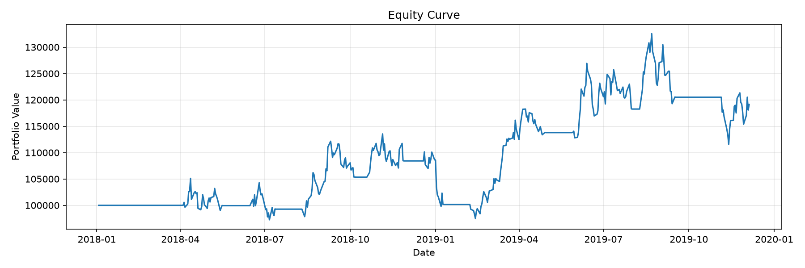
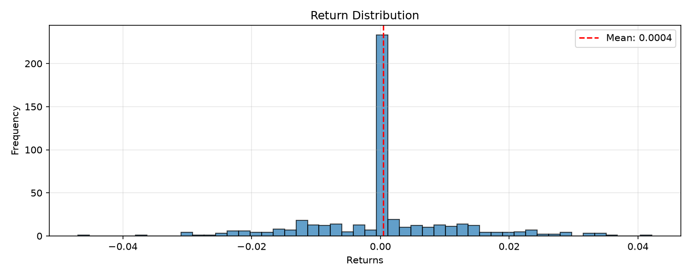
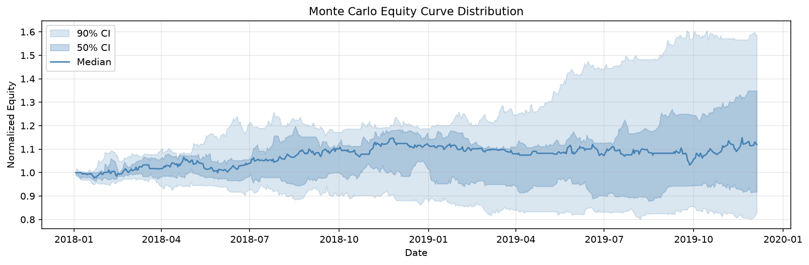

Symbol: SPY
Strategy: sma_crossover_monte_carlo
Periods: 502
| Metric | Value |
|---|---|
| Total Return | 19.13% |
| Annualized Return | 9.19% |
| Annualized Volatility | 17.78% |
| Sharpe Ratio | 0.47 |
| Sortino Ratio | 0.68 |
| Calmar Ratio | 0.58 |
| Max Drawdown | -15.83% |
| Omega Ratio | 1.75 |
| Skewness | 0.14 |
| Kurtosis | 2.14 |
| VaR (95%) | -1.91% |
| CVaR (95%) | -2.53% |
| Metric | Value |
|---|---|
| Number of Simulations | 10.00 |
| Base Observations | 502.00 |
| Probability of Ruin | 0.00% |
| Ruin Threshold | 50.00% |
| Metric | 90% | 95% | 99% |
|---|---|---|---|
| total_return | [-0.1712, 0.5882] | [-0.1808, 0.6495] | [-0.1884, 0.6985] |
| annualized_return | [-0.0900, 0.2602] | [-0.0953, 0.2848] | [-0.0995, 0.3045] |
| annualized_volatility | [0.1576, 0.1953] | [0.1574, 0.1955] | [0.1572, 0.1957] |
| sharpe_ratio | [-0.5448, 1.1941] | [-0.5695, 1.2862] | [-0.5893, 1.3599] |
| sortino_ratio | [-0.7509, 1.7898] | [-0.7862, 1.9429] | [-0.8144, 2.0653] |
| max_drawdown | [-0.2980, -0.1041] | [-0.3003, -0.1022] | [-0.3020, -0.1006] |
| calmar_ratio | [0.1728, 2.3796] | [0.1391, 2.6105] | [0.1122, 2.7952] |
| Metric | Mean | Std | Median | Min | Max |
|---|---|---|---|---|---|
| total_return | 0.1580 | 0.2749 | 0.1193 | -0.1903 | 0.7108 |
| annualized_return | 0.0690 | 0.1264 | 0.0581 | -0.1006 | 0.3094 |
| annualized_volatility | 0.1751 | 0.0135 | 0.1760 | 0.1572 | 0.1957 |
| sharpe_ratio | 0.3030 | 0.6408 | 0.3040 | -0.5942 | 1.3783 |
| sortino_ratio | 0.4674 | 0.9381 | 0.4456 | -0.8215 | 2.0959 |
| max_drawdown | -0.1938 | 0.0706 | -0.1635 | -0.3025 | -0.1003 |
| calmar_ratio | 0.8287 | 0.8414 | 0.3922 | 0.1054 | 2.8413 |


